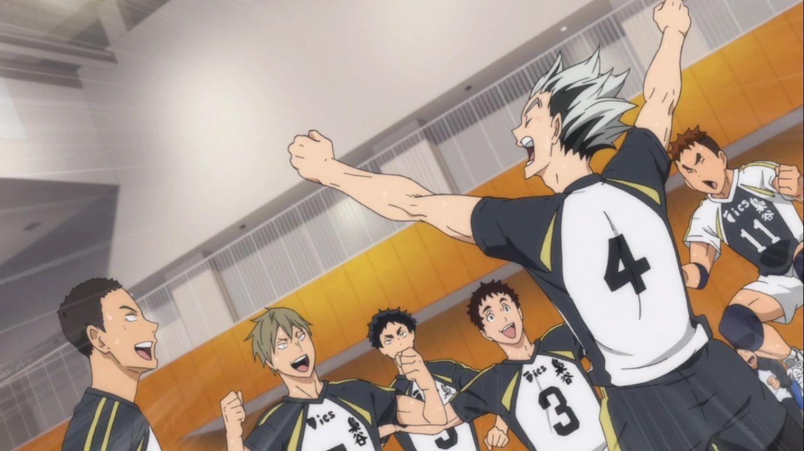

Présentation de certaines équipes d'Haikyuu
Karasuno
 Capitaine Ailier, Daichi Sawamura, N*1
Passeur, Koshi Sugawara, N*2
Ailier, Asahi Azumane, N*3
Libéro, Yu Nishinoya, N*4
Ailier, Ryonosuke Tanaka, N*5
Ailier, Chikara Ennoshita, N*6
Ailier, Hisashi Kisoshita, N*7
Central, Kazuhito Narita, N*8
Passeur, Tobio Kageyama, N*9
Central, Shōyō Hinata, N*10
Central, Kei Tsukishima, N*11
Central, Tadashi Yamaguchi, N*12
Entraineur, Ikkei Ukai
Manageur, Kiyoko Shimizu
Professeur, Ittetsu Takeda
Capitaine Ailier, Daichi Sawamura, N*1
Passeur, Koshi Sugawara, N*2
Ailier, Asahi Azumane, N*3
Libéro, Yu Nishinoya, N*4
Ailier, Ryonosuke Tanaka, N*5
Ailier, Chikara Ennoshita, N*6
Ailier, Hisashi Kisoshita, N*7
Central, Kazuhito Narita, N*8
Passeur, Tobio Kageyama, N*9
Central, Shōyō Hinata, N*10
Central, Kei Tsukishima, N*11
Central, Tadashi Yamaguchi, N*12
Entraineur, Ikkei Ukai
Manageur, Kiyoko Shimizu
Professeur, Ittetsu Takeda
Nekoma
 Capitaine Central, Tetsurou Kuroo, N*1
Ailier, Nobuyuki Kai, N*2
Libero, Morisuke Yaku, N*3
Ailier, Taketora Yamamoto, N*4
Passeur, Kenma Kozume, N*5
Ailier, Shouhei Fukunaga, N*6
Central, Sou Inuoka, N*7
Central, Lev Haiba, N*11
Libero, Yuuki Shibayama, N*12
Entraineur, Yasufumi Nekomata
Entraineur, Manabu Naoi
Capitaine Central, Tetsurou Kuroo, N*1
Ailier, Nobuyuki Kai, N*2
Libero, Morisuke Yaku, N*3
Ailier, Taketora Yamamoto, N*4
Passeur, Kenma Kozume, N*5
Ailier, Shouhei Fukunaga, N*6
Central, Sou Inuoka, N*7
Central, Lev Haiba, N*11
Libero, Yuuki Shibayama, N*12
Entraineur, Yasufumi Nekomata
Entraineur, Manabu Naoi
Shiratorizawa
Capitaine Ailier, Wakatoshi Ushijima, N*1
Passeur, Eita Semi, N*3
Ailier, Reon Ōhira, N*4
Central, Satori Tendō, N*5
Ailier, Tsutomu Goshiki, N*8
Passeur, Kenjiro Shirabu, N*10
Central, Taichi Kawanishi, N*12
Libéro, Hayato Yamagata, N*14
Entraineur, Igurusho Kaji
Fukurodani

Central, Tatsuki Wahio, N*2
Ailier, Yamato Sarukui, N*3
Capitaine Ailier, Koutarou Bokuto, N*4
Passeur, Keiji Akaashi, N*5
Ailier, Akinori Konoha, N*7
Libéro, Haruki Komi, N*11
Central, Wataru Onaga, N*12
Dateko
Central, Takanobu Aone, N*1
Capitain Ailier, Kenji Futakuchi, N*2
Passeur, Kanji Koganegawa, N*7
Libéro, Kōsuke Sakunami,N*13
Entraineur, Takurō Oiwake
Aoba Josai
 Capitaine Passeur, Tōru Oikawa, N*1
Central, Issei Matsukawa, N*2
Ailier, Takahiro Hanamaki, N*3
Ailier, Hajime Iwaizumi, N*4
Passeur, Shigeru Yahaba, N*6
Libéro, Shinji Watari, N*7
Central, Yūtarō Kindaichi, N*12
Ailier, Akira Kunimi, N*13
Ailier, Kentarō Kyōtani, N*16
Entraineur, Sadayuki Mizoguchi
Capitaine Passeur, Tōru Oikawa, N*1
Central, Issei Matsukawa, N*2
Ailier, Takahiro Hanamaki, N*3
Ailier, Hajime Iwaizumi, N*4
Passeur, Shigeru Yahaba, N*6
Libéro, Shinji Watari, N*7
Central, Yūtarō Kindaichi, N*12
Ailier, Akira Kunimi, N*13
Ailier, Kentarō Kyōtani, N*16
Entraineur, Sadayuki Mizoguchi